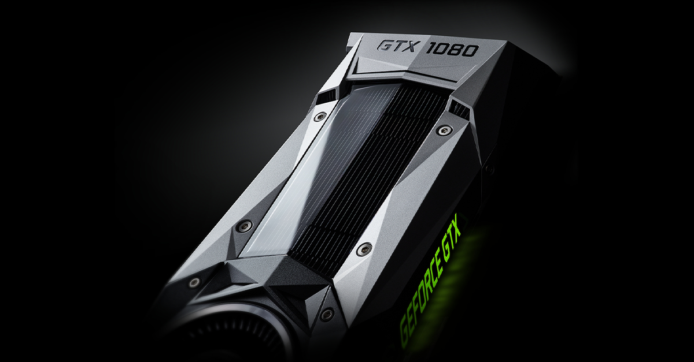
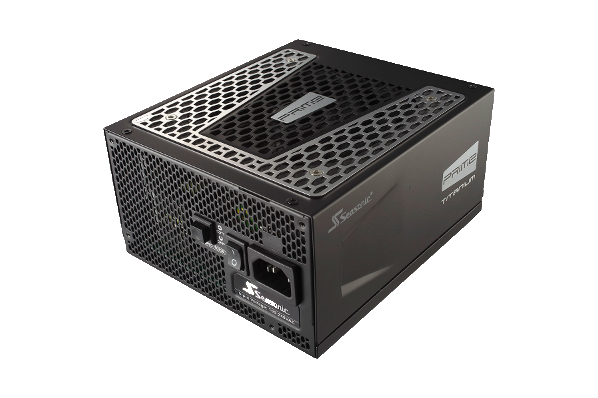

Processor
You can choose between two companies who both make processors.You have AMD and Intel to choose from. Now days AMD is usually the cheaper option for someone who is looking to be on a budget. Intel on the other hand does offer cheaper options and often with better per-core performance at the moment.
CPU Cooler
Motherboard:
This option is all about choice. A motherboard is all about what features you want and want you don't care about.
The motherboard doesn't affect performance in anyway shape or form.
RAM:
RAM is kind of important.
Graphics Card:
The GPU (Graphic processing unit) is the part of the computer that is going to be specialized for graphic functions. It is going to allow you to play games at higher resolutions and graphical fidelity than a itergrated GPU on the processor.
You also have two options here. The companies that manufacture these cards are going to be AMD and Nvidia.
Hard drive(s)
Two options here you can choose a traditional rotatitng spinning drive or an SSD(Solid State Drive).
It's always best to get a HDD(hard disk drive) for bulk storage (>1TB). Then get an SSD for faster storage to put your operating system on and other highly used applications. SSD's right now are just too much for bulk storage, but if you want to spend the money. You can do it.
Power Supply
This is an important pick. You must pick something that is going to power your whole computer without compromises. The power supply could kill all of your components if the power supply is of lower quality. The brands that you would want to pick are from the list below.
- Seasonic
- Corsiar
- EVGA
- Silverstone
- Superflower
Case
Operating System
- Option to choose between a Microsoft Windows © distribution or a Linux distribution.
Optional PC parts to buy.
- SSD for hard drive replacement. I highly reccommend getting this part along side a traditional rotating spinning drive.
- Keyboard and Mouse replacement. Something like a mechanical keyboard or a higher end mouse.
- Network card if necessary.
- Monitor
- Optical drive (You probably don't need this)